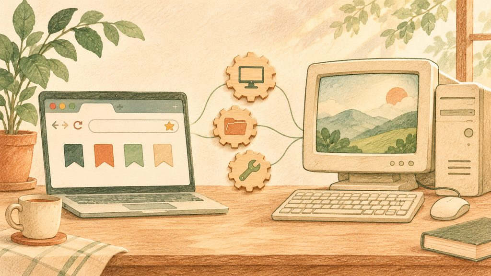
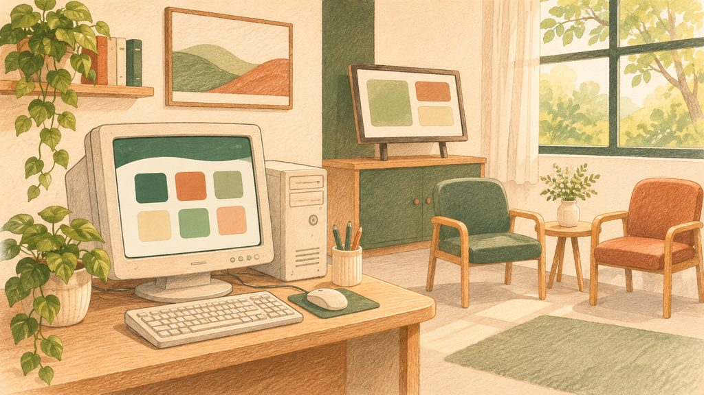
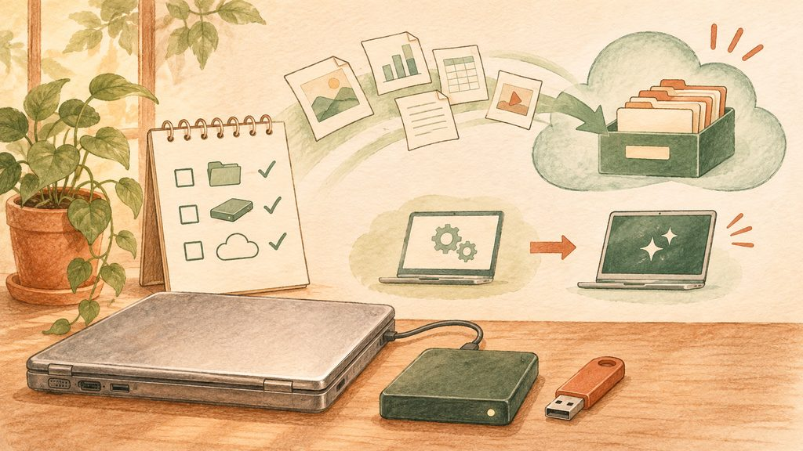

브라우저를 넘어,
PC의 바탕을 바꾸는 일
ChromeOS Flex는 가지고 계신 PC에 설치하는 무료 운영체제입니다. 운영체제란 컴퓨터를 켜고 프로그램을 움직이게 하는 기본 바탕입니다. 지금 쓰는 윈도우를 다른 바탕으로 바꾸는 일이라고 생각하시면 됩니다.
윈도우 PC에서 구글 관리 콘솔로 크롬을 관리할 때는 주로 브라우저 안의 앱·확장 프로그램, 북마크, 홈페이지, 브라우저 배경 등을 설정합니다. 윈도우의 바탕화면이나 USB 장치까지 같은 방식으로 다루는 것은 아닙니다.
윈도우를 만든 마이크로소프트 쪽에서는 Intune이 포함된 Microsoft 365 상위 요금제 등으로 USB 사용 제한이나 바탕화면 같은 기기 설정을 관리할 수 있습니다. 구글 중심으로 PC 자체를 관리하려는 경우에는 운영체제를 ChromeOS 계열로 바꾸는 방법을 검토합니다.

어디까지 관리하는 걸까요?
아래 두 가지 방식을 번갈아 눌러 보세요.
윈도우를 그대로 쓰면서, 직원들이 여는 크롬의 업무 환경을 관리합니다.
윈도우 자체의 USB 차단·바탕화면 관리는 별도 기기 관리 영역입니다.
새 기기를 사는 크롬북
ChromeOS가 기본으로 설치된 컴퓨터입니다. 새 기기를 구입하는 비용이 들며, 운영체제가 기기와 함께 제공됩니다.
기존 PC를 살리는 Flex
지금 가지고 있는 호환 PC에 ChromeOS Flex를 무료로 설치합니다. 관리 콘솔 등록과 키오스크 운영에 필요한 라이선스 비용은 별도입니다.
좋은 PC를 바꾸기보다,
쉬고 있는 PC를 찾아보세요
아직 잘 돌아가는 고성능 PC를 굳이 바꿀 필요는 없습니다. 너무 느려서 쓰지 않게 된 오래된 PC가 우선 검토할 대상입니다.
ChromeOS Flex는 웹을 중심으로 사용하는 가벼운 운영체제입니다. 오래된 PC에서도 웹 페이지를 더 쾌적하게 열 수 있으며, 드라이브·문서·시트·캘린더처럼 브라우저로 하는 업무를 이어 갈 수 있습니다. 실제 속도와 사용성은 PC 상태와 인터넷 환경에 따라 다르므로 먼저 시험해 보세요.
특히 출석 체크, 안내 화면, 공용 검색대처럼 한 가지 역할을 맡기기에 좋습니다. 한 가지 목적에 맞춰 화면과 이용 범위를 제한하는 운영 방식을 ‘키오스크’라고 부릅니다. 이런 방식으로 관리해 운영하려면 유료 관리 라이선스와 기기 등록이 필요합니다.

우리 업무에도 잘 맞을까요?
가장 가까운 상황을 누르면 확인할 점이 나옵니다.
기관 계정으로 드라이브·문서·시트·캘린더를 써 보세요. 자주 여는 업무 사이트가 잘 열리는지, 파일 업로드와 출력까지 가능한지 실제 업무 흐름으로 확인하시면 좋습니다.
설치 버튼보다,
백업이 먼저입니다
하드디스크 등 내부 저장장치에 ChromeOS Flex를 설치하면 기존 윈도우와 그 안의 파일이 지워집니다. 파일을 그대로 둔 채 운영체제만 가볍게 바꾸는 작업이 아닙니다.
필요한 자료를 먼저 다른 곳으로 옮겨 주세요
바탕화면, 문서, 다운로드 폴더에 필요한 파일이 없는지 살펴보세요. 기관 정책에 맞는 드라이브나 다른 저장장치로 옮기고, 옮긴 파일이 실제로 열리는지 확인한 뒤 다음 단계로 넘어가셔야 합니다.

윈도우 전용 프로그램은 실행되지 않습니다. 한글 설치판 같은 프로그램이 필요한 업무는 미리 대안을 확인해야 합니다. 한글 문서를 다루려면 드라이브와 연동되는 한글 문서 편집 앱을 준비하고, 실제 업무 문서가 열리고 편집되는지 확인해 주세요.
바로 설치하기보다 설치 USB로 먼저 부팅해 써 보는 방법을 권합니다. 부팅은 컴퓨터를 켜서 운영체제를 시작하는 일입니다. 준비된 USB 또는 부팅 가능한 외장 SSD로 시작해, 그 PC에서 잘 돌아가는지 확인한 뒤 내부 저장장치에 설치할지 결정하시면 됩니다.
안전한 전환의 네 단계
번호를 누르거나 ‘다음 단계’로 이동해 준비 순서를 살펴보세요. 이 화면은 안내용이며 실제 PC를 변경하지 않습니다.
정확한 모델을 확인하세요
PC의 제조사와 모델명을 확인하고 구글 인증 모델 목록에서 찾아보세요. 모든 오래된 PC가 공식 지원되는 것은 아닙니다. 목록의 지원 상태와 지원 종료 시점도 함께 살펴보세요.
무료 설치와 기관 관리는
따로 생각해 주세요
ChromeOS Flex 자체는 무료입니다. 그러나 기관 계정으로 로그인하는 것만으로 기기 전체가 자동 관리되는 것은 아닙니다.
호환되는 PC에 ChromeOS Flex를 설치하고 사용합니다.
용도에 맞는 관리 라이선스를 준비하고 기기를 등록합니다.
관리 콘솔에서 설정을 내려보내며 업무용 PC나 한 가지 목적의 PC로 운영하려면, 관리할 기기마다 유료 라이선스가 있어야 합니다. Chrome Enterprise Upgrade, Kiosk & Signage Upgrade 등이 있으며 운영 목적에 맞는 종류를 확인해야 합니다. 공식 기기 관리·라이선스 안내
- 어떤 역할의 PC인지 먼저 정합니다
직원 업무용인지, 출석 확인용인지, 안내 화면용인지 정리해 관리자에게 전달해 주세요.
- 기관 관리자와 라이선스를 확인합니다
Google Workspace 계정의 사용 여부와 별개로, 해당 PC를 등록하고 관리하는 데 필요한 기기별 라이선스를 확인합니다.
- 등록한 기기에 설정을 적용합니다
관리 콘솔에 기기를 등록한 뒤, 기관 계정과 용도에 맞는 앱·웹사이트·이용 환경을 설정합니다. 직원은 설정된 환경에서 업무를 시작하시면 됩니다.
현장에서 궁금했던 이야기
질문을 누르면 답변이 펼쳐집니다.
현장에서 나온 질문오래된 PC에 깔면, 그 안의 파일도 그대로 쓸 수 있나요?
내부 저장장치에 설치하면 윈도우와 기존 파일이 지워집니다. 필요한 파일은 먼저 드라이브 등 다른 곳으로 옮겨 두세요. 옮긴 자료가 잘 열리는지 확인하는 것까지가 백업입니다.
설치 USB나 부팅 가능한 외장 SSD로 먼저 시작해 써 보는 방법도 있습니다. 그 PC에서 잘 작동하는지 확인한 뒤, 백업을 마친 상태에서 설치를 결정해 주세요.
핵심 내용 다시 보기무료라면 공용 키오스크로 관리하는 것도 무료인가요?
운영체제는 무료이지만 관리 콘솔 등록과 키오스크 운영에는 기기별 유료 관리 라이선스가 필요합니다. 기관 관리자에게 용도를 알리고 적합한 라이선스와 등록 절차를 확인해 주세요.
핵심 내용 다시 보기한글 설치판이나 윈도우 전용 업무 프로그램도 쓸 수 있나요?
윈도우 전용 설치 프로그램은 ChromeOS Flex에서 실행되지 않습니다. 한글 문서는 드라이브와 연동되는 한글 문서 편집 앱을 준비해 다루셔야 합니다. 필요한 프로그램에 웹 대안이 있는지, 실제 문서의 서식과 출력이 맞는지 먼저 확인해 주세요.
세 가지만 기억하셔도 좋습니다
답을 하나씩 고르면 바로 해설이 나옵니다. 틀려도 괜찮습니다. 다시 골라 보세요.
설치부터 하지 마시고,
한 대의 쓰임부터 정해 보세요
오늘의 과제는 오래된 PC 한 대의 전환 가능성을 살펴보는 것입니다. 아래 항목을 눌러 준비한 내용을 표시해 보세요. 실제 설치는 백업과 호환성 확인을 마친 뒤 관리자와 진행하시면 됩니다.
0 / 6개를 확인하셨습니다.
필요할 때 다시 열어 볼 공식 안내
설치와 관리에 앞서 최신 안내를 확인해 주세요. 아래 링크는 새 창에서 열립니다.